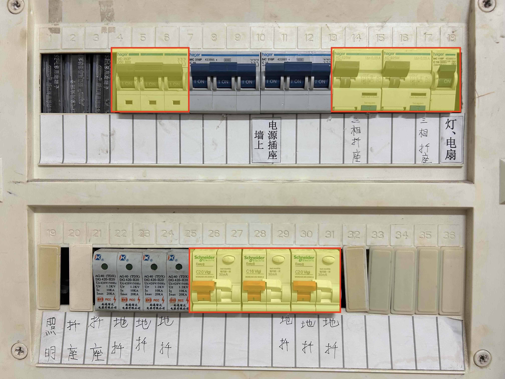

实验室上电和断电
实验室上电：
- 如下图片中的 3组开关（黄底红边），都往上拨，即上电。上电后所有开关状态如下图所示。
- 未涉及到的其他开关（2组蓝色开关），不要触碰。
实验室断电：
- 当天工作完毕不在使用实验室设备了，一定要断电。
- 如下图片中的 3组开关（黄底红边），都往下拨，即断电。
- 未涉及到的其他开关（2组蓝色开关），不要触碰。

华为昇腾开发者套件DK的开机、关机+下电
- 开发者套件如何开机、关机+下电，可参考https://www.hiascend.com/document/detail/zh/Atlas200IDKA2DeveloperKit/23.0.RC2/Hardware%20Interfaces/hiug/hiug_0004.html
- 当天工作完成后，一定要关机+下电。下电即正常关机后，拔掉开发者套件上的电源线。
- 关机：除了直接按开发者套件上的开机关机键外，还可以用 root 用户执行
shutdown -h now命令。
登录华为昇腾开发者套件
- Windows 运行 power shell，
-
假定开发者套件的 IP 是 192.168.31.200。在 power shell中执行命令： ssh 用户名@192.168.31.200。比如用户名是 gdv2，则：
ssh gdv2@192.168.31.200 - 按屏幕提示输入口令。输入口令时，屏幕上不显示输入的口令。
华为昇腾开发者套件系统管理
增加SSD硬盘
更新 24-10-29 | 发布 24-10-29
在淘宝买了块 M2 接口的 SSD 硬盘。有 2280 长一些的，也有 2240 一半长的。买了 2280 规格 1TB 的。参考 接入 M.2Key M硬盘🔗 ，将 SSD 硬盘装到开发者套件上。螺丝有点紧，用大螺丝刀搞定。大致要经过以下几步操作，就可以用上 SSD 硬盘。
1、执行 fdisk -l 查看未挂载的硬盘
Disk /dev/nvme0n1: 931.51 GiB, 1000204886016 bytes, 1953525168 sectors
Disk model: WD Blue SN580 1TB
Units: sectors of 1 * 512 = 512 bytes
Sector size (logical/physical): 512 bytes / 512 bytes
I/O size (minimum/optimal): 512 bytes / 512 bytes
Disklabel type: dos
Disk identifier: 0x9d447651
2、执行 fdisk /dev/nvme0n1 对硬盘分区
考虑硬盘有 1TB，就做 2个分区，每个 500 GB左右。第 1 个分区在大小那里，输入了 +500G，其他基本都是默认取值。做 2 遍，因为分了 2 个区。分区完成后，执行
fdisk -l，就可以看到新增了2个设备（device）
Device Boot Start End Sectors Size Id Type
/dev/nvme0n1p1 2048 1048578047 1048576000 500G 83 Linux
/dev/nvme0n1p2 1048578048 1953525167 904947120 431.5G 83 Linux
3、执行 mkfs 对分区（设备，device）格式化
最终选择了 mkfs.ext4，即格式化为 ext4 文件系统。命令如下：
mkfs.ext4 /dev/nvme0n1p1
mkfs.ext4 /dev/nvme0n1p2
4、执行 mount 命令挂载分区（设备，device）到文件系统
新建了2个目录，/home1 和 /data1，分别用于挂载 2 个分区。命令如下：
mount /dev/nvme0n1p1 /home1
mount /dev/nvme0n1p2 /data1
5、相关信息更新到 /etc/fstab 文件中
相关信息更新到/etc/fstab 文件中后，每次重启系统，可直接使用该 SSD 硬盘，即可以访问目录 /home1 和 /data1。如果未将相关信息更新到/etc/fstab 文件中，则每次重新启动后，要重复上述第 4 步操作。更新什么信息到 /etc/fstab 文件中，此处从略，可执行上网搜索。
开机使用一段时间后，用手摸 SSD 硬盘，觉得还是有点热。待双 11 在淘宝买个散热马甲装上，应该就可以了。
主要参考资料：
1、在Linux系统中，添加新硬盘。划分两个分区🔗
2、linux挂载硬盘步骤（简单易用，直接上手，无废话）🔗
增加用户
更新 24-10-29 | 发布 24-10-29
通过图形界面实现增加用户的。相关参数取值如下：
1、main group。取值为 user。
2、还加入 sudo group。这样用户也就可以通过 sudo 方式，执行 sudo install ... / sudo shutdown ...等命令。
3、shell。选择了 /bin/bash。一般在 Linux 上大多使用该 shell。另外选择该 shell 后，命令提示符也是彩色的，并带路径名，等，是我所希望的（省的要自己设置）。假定选择 /bin/shell，命令提示符就是普通的。
4、home 目录。记得修改到 /home1 下面，因为有几百G空间。